Importance of Data Analysis
Contents
Importance of Data Analysis#
Why is Data Analysis Your Most Important Skill?#
In your work you will be asked to derive data-driven conclusions, how you analyze and visualize data is the most important skill you can have.
A failure in any one of the data analysis steps can results in non-optimal decisions
Data Analysis Failure Cases#
Morton Thiokol Engineers on the Challenger#
Background#
On January 28, 1986 the Challenger aircraft was set to launch
The shuttle has an orbiter, a large fuel tank, and two solid-rocket boosters.
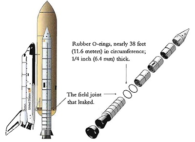
In the solid rocket their are field joints held together by O-rings
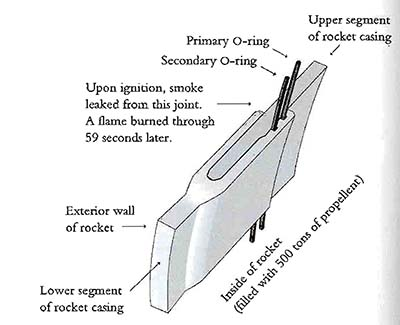
Close up of the O-ring assembly, a small leak can lead to a runaway explosion
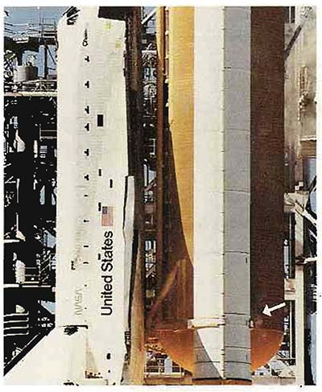
About 1 second after ignition a small puff of smoke was seen in the right booster indicating the o-ring had failed
On launch the area where the leak was could be seen burning for about 2 seconds and then was plugged by the melting material and insulation.
At ~58 seconds the small flame grew to engulf the right solid rocket booster
After 73 seconds the space ship exploded
The life of the 7 members of the flight crew were lost that day.
Why did this happen?#
Ambient temperatures outside were in the low 30s, and the temperature of the o-ring was less than 20 \({}^{\circ}F\)
The engineers concerned that the o-ring would not seal at low temperatures prepared a document outlining their argument to postpone the launch to NASA
The data analysis provided by Morton Thiol insufficiently explained:
The past experience with low temperature launches
Physics of resiliency which declines exponentially with temperature
Confusing and misleading representation of data
In industry and academia you will be required to present data to administrators and decision makers. These people will have to make difficult decisions and have internal agendas. If you analyze and present data in a convincing way you can lead decision makers to make confident and correct decisions
While a lot of fingers could be pointed in different directions the crisis could have been averted if the data was presented in an obvious and convincing manner
How the data was presented#
The data was presented in 13 charts and a discussion was held via phone. Yes, maybe things would have been better if it was a Zoom call.
Title of report#
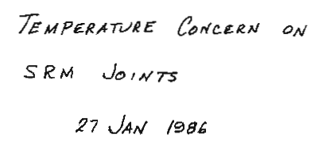
What is an SRM joint? \(\rightarrow\) Solid-Rocket Motor
Where are the names and credibility of the authors?
The word concern does not convey the serious nature of their conclusions
First Figure - History#
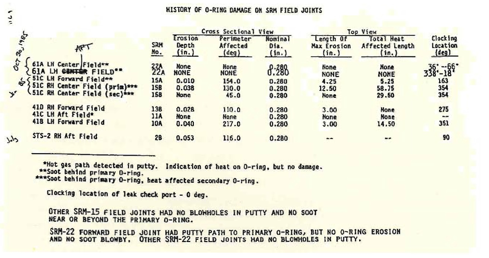
Does not show any evidence of catastrophic damage
The chart provides no information about the cause determined by the engineers \(\rightarrow\) temperature
Damage is listed as a bunch of parameters \(\rightarrow\) some combined index is needed
Second Figure - Joint Bending#
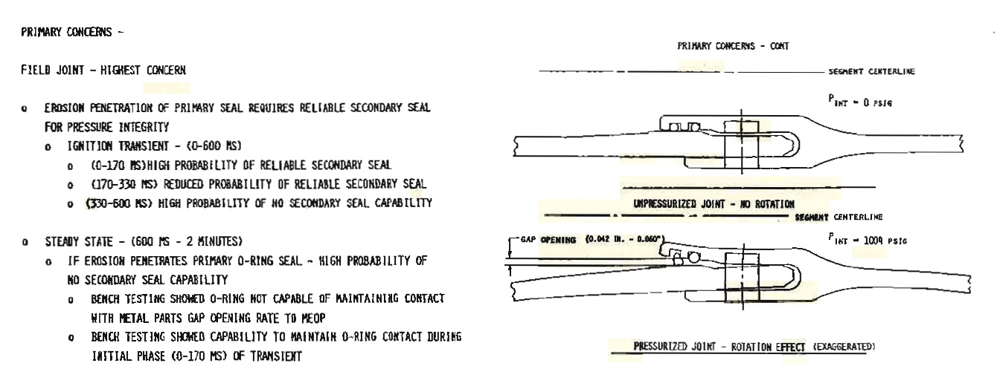
Shows the effect of how bending joint can cause a problem with the seal \(\rightarrow\) once again temperature is not mentioned
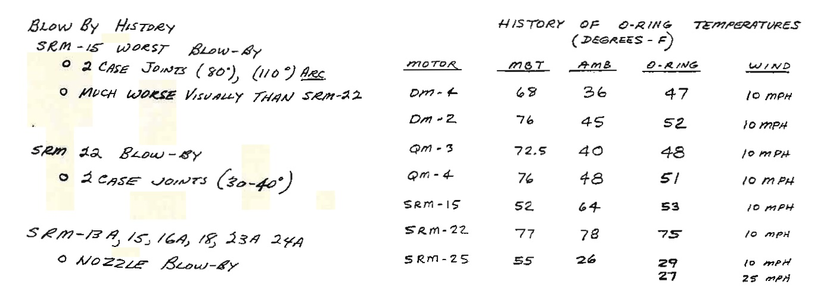
Chart starts to show the temperatures, important information about blow-by seen in the rocket is not indicated in the chart.
This rocket launch is not clearly indicated
This does not show the other 22 launches of the SRM rocket, and their temperature.
The development motors DM are extremely misleading. These rockets never left the ground and thus should not be expected to exhibit the same degree of blow-by.
Conclusions#
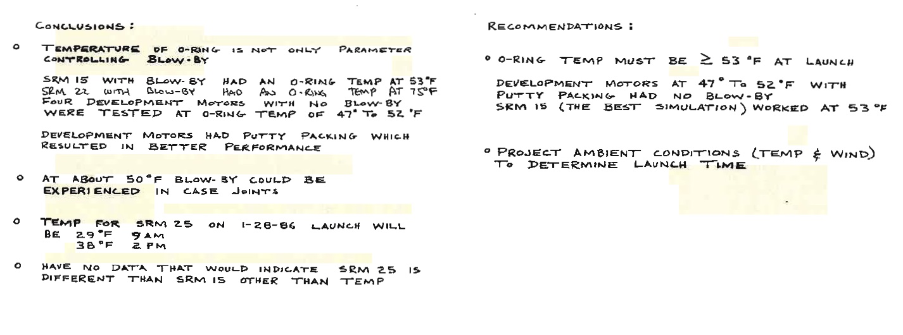
Conclusions drawn were not convincing based on evidence
The conclusion that the o-ring temperature should be >50 \(^{\circ{}}F\) was based on a sample size of 1
There was no association made between the materials physics and temperature. This would have highlighed that 53 \(^{\circ{}}F\) is significantly different than the expected launch temperatures of 29 \(^{\circ{}}F\)
How the data should have been presented#
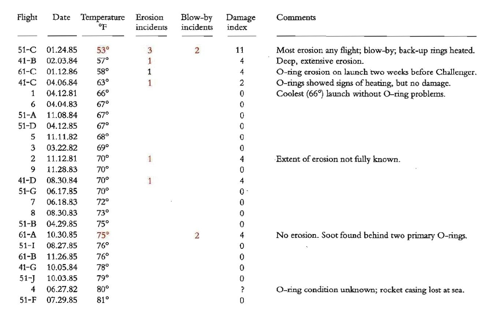
If a mere ordered data table with some description was used it would have been clear that temperature and o-ring damage are strongly correlated
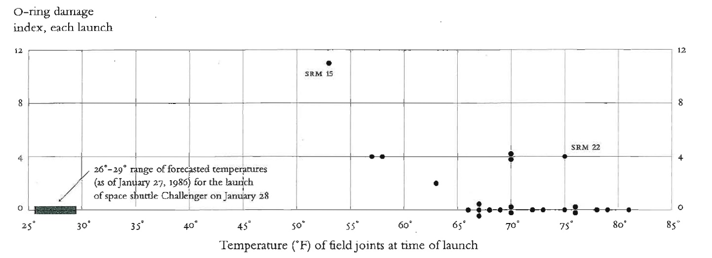
Even better a scatter plot showing the o-ring damage index and launch temperature would have made the argument not to launch incredibly convincing
The post-mortem report#
The report they presented#
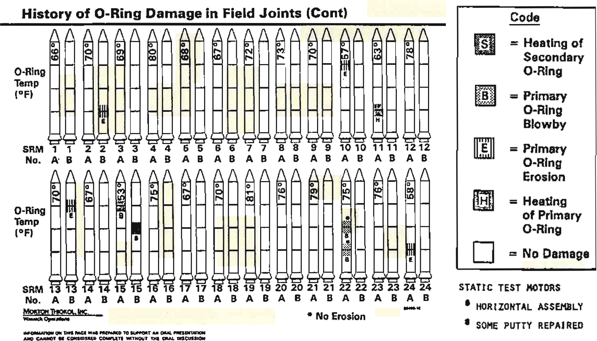
Even after the accident the data still was not presented clearly:
The order of the rockets is listed sequentially, not by temperature of the launch
Temperature is not able to be visualized graphically
Damage indication is very difficult to correlate to the temperature
Rockets are silly, unnecessary, and distracting
Also, they dropped the legend
A Slightly better but still bad report#
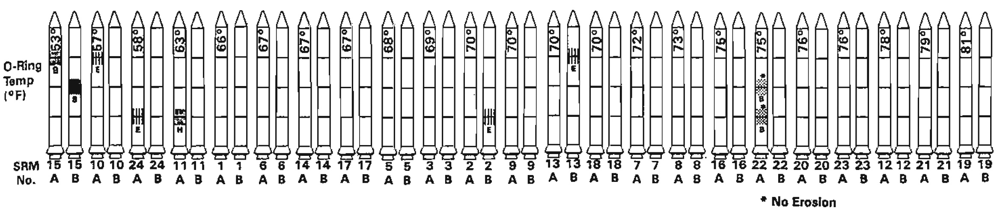
If they just ordered the rockets by temperature it would have been much more convincing
Richard Feynman Simply Explains the Day#
The best way to explain a complex concept is with a simple to understand experience
from IPython.display import HTML
HTML('<iframe width="560" height="315" src="https://www.youtube.com/embed/raMmRKGkGD4" title="YouTube video player" frameborder="0" allow="accelerometer; autoplay; clipboard-write; encrypted-media; gyroscope; picture-in-picture" allowfullscreen></iframe>')
C:\Users\Joshua Agar\.conda\envs\Jupyterbook\lib\site-packages\IPython\core\display.py:419: UserWarning: Consider using IPython.display.IFrame instead
warnings.warn("Consider using IPython.display.IFrame instead")
How you analyze and present data-driven arguments has a transformation effect on critical decisions
Zillow#
Background#
Founded in 2006, by 2019 had revenue of $2.7B
Zillow got into the business of flipping houses. The goal is to buy low and sell high.
The most important objective is to price homes correctly
Zillow had about 43 million homes in their database in 2006 and they were able to predict the price of a property at 14% median absolute percent error. By 2017, they had about 110 million homes in their database. The error rate had reduced to 5%.
Where’s that TikTok expert?
— Ayesha Selden, CFP® (@AyeshaSelden) November 1, 2021
“208 homes that Zillow owns in Phoenix, for instance, 93% were listed for less than what it paid. In Dallas, where Zillow owns 168 homes, about 81% of its properties were listed for less than what the company bought them for.” https://t.co/ex5iGYmph7
Why did the model start to fail?#
Data Quality#
Garbage in garbage out - if the quality of the data used to make a prediction is bad or does not reflect the statistical distribution of the real world the quality of the model will be diminished
Zillow relied on data from users and public records. Some of this data was outdated or flawed
House was remodeled but not updated on website
House underwent an addition but was not updated on website
Sales price was recorded incorrectly
Reliance on an Algorithm#
There is a tendancy to overly depend on an algorithms decision making, it is important to remember algorithms only think algorithmically \(\rightarrow\) algorithms are logical but not senible
Definition
Sensible - (of a statement or course of action) chosen in accordance with wisdom or prudence; likely to be of benefit.
Definition
Logical - of or according to the rules of logic or formal argument.
Gaming the system#
When there are intelligent agents involved there are ways to game the system
If you list a few houses and notify Zillow of fake inflated sales the algorithm will think the home values are high.
It is important to have a robust fraud detection systems
Understanding the problem in its entirety and external factors#
Zillow only considered the price of homes, not the buyers \(\rightarrow\) if the buyers change their behavior model can fail.
Real problems have a lot of complexity, it is important that you adversarial attack your models and algorithms
You should always think your results are a lie until proven otherwise
Discriminatory Algorithms#
AI Bias#
The representation of data, and the data used by the model is imperfect, and can encode hidden bias.
Example AI: In healthcare#
An algorithm was designed to determine if a patient would benefit from high-risk care management which provides chronically-ill penitents with specially trained staff
The data considered the needs of the patient based on their past healthcare costs. \(\rightarrow\) why might this be a bad metric?
The data is biased. of almost 50,000 patients—of whom 6,079 self-identified as black and 43,539 self-identified as white—and compared their algorithmic risk scores with their actual health histories. Black patients, the researchers found, tended to receive lower risk scores. For example, among all patients classified as very high-risk, black individuals turned out to have 26.3 percent more chronic illnesses than white ones (despite sharing similar risk scores). Because their recorded health care costs were on par with those of healthier white people, the program was less likely to flag eligible black patients for high-risk care management.
There are a few further reasons for this bias:
Race and income are correlated, this effects ability to afford healthcare services due to access, location, and time constraints
Black patients tend to have less trust in doctors who they perceive to exhibit bias \(\rightarrow\) thus black patients are less likely to seek care
Correctional Offender Management Profiling for Alternative Sanctions (COMPAS)#
This algorithm tried to determine the tendancy of recidivism of a person convicted of a crime
Race is not a factor for in determining the tendency of recidivism, however, COMPAS showed significant bias:
Black defendants were often predicted to be at a higher risk of recidivism than they actually were.
White defendants were often predicted to be less risky than they were.
The analysis also showed that even when controlling for prior crimes, future recidivism, age, and gender, black defendants were 45 percent more likely to be assigned higher risk scores than white defendants.
Black defendants were also twice as likely as white defendants to be misclassified as being a higher risk of violent recidivism.
Model tended to predict low scores for white offenders and high scores for black offenders. 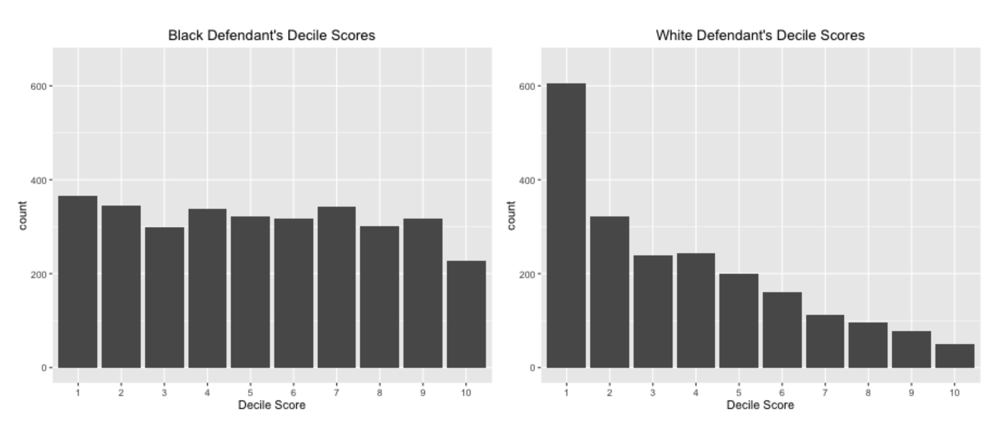
What happens when we validate this model on real data?#
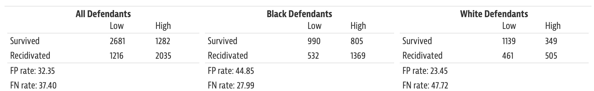
Black defendants had a much higher false-positive (meaning it was predicted that they would commit a crime and did not), and lower false negative-rate (meaning they were predicted not to commit a crime and they did) compared to white defendants
The only viable conclusion is the algorithm is unfairly biased
[LAKM16]
What can we learn from these examples?#
How data is presented is extremely important#
Data and charts are extremely convincing. Design of charts can convey false conclusions, conceal important information, or make important observations convincing
Data used should represent what the the data “should be” not what the data “is”#
Most samplings of data or data records are not without bias \(\rightarrow\) algorithms using biased data will only enhance its bias
from IPython.display import IFrame
IFrame('https://badvisualisations.tumblr.com/', width=800, height=1200)
Data governance and provenance#
Data that is used to train a model needs governance and oversight
If data is to be used knowing the fully provenance is important
Definition
Provenance - the place of origin or earliest known history of something.
Correlation does not equal causation#
Just because there is a correlation in the data does not imply causation \(\rightarrow\) need to validate what your algorithms are telling you
from IPython.display import IFrame
IFrame('https://blog.plotly.com/post/146891210217/spurious-correlations', width=800, height=1200)
References#
- LAKM16
Jeff Larson, Julia Angwin, Lauren Kirchner, and Surya Mattu. How we analyzed the COMPAS recidivism algorithm. https://www.propublica.org/article/how-we-analyzed-the-compas-recidivism-algorithm, May 2016. Accessed: 2022-8-20.
- OPVM19
Ziad Obermeyer, Brian Powers, Christine Vogeli, and Sendhil Mullainathan. Dissecting racial bias in an algorithm used to manage the health of populations. Science, 366(6464):447–453, October 2019.
- Var19
Starre Vartan. Racial bias found in a major health care risk algorithm. Scientific American, 2019.